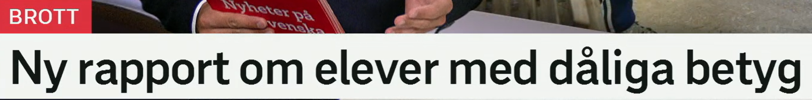
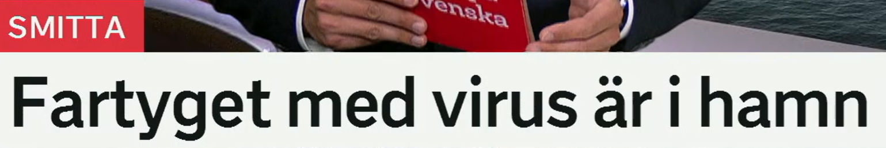
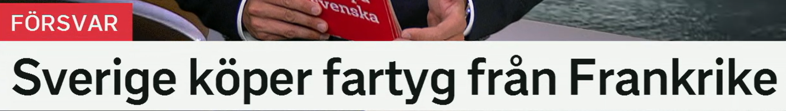
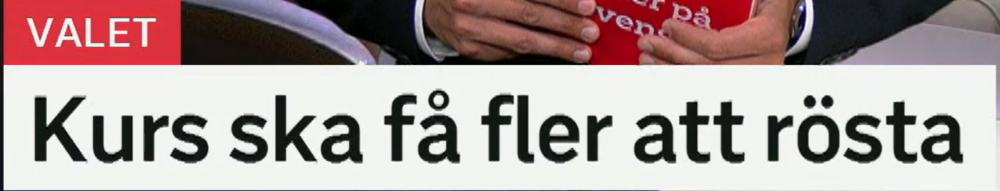
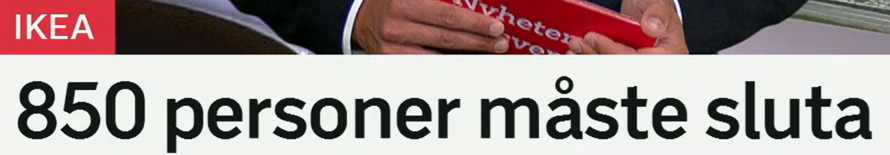

Ny rapport om elever med dåliga betyg
关于成绩差学生的新报告。
en rapport 报告；动词 rapportera 报道、报告。相关词：utredning 调查，undersökning 调查研究，rapportering 报道。
En ny rapport visar ökade skillnader. 一份新报告显示差距扩大。
这里表示“关于”。常见搭配：en bok om historia 一本关于历史的书，prata om skolan 谈论学校。
Rapporten handlar om unga väljare. 这份报告涉及年轻选民。
en elev 学生，通常指中小学学生；大学生多用 student。相关词：skola 学校，lärare 老师，klass 班级。
Många elever behöver extra stöd. 许多学生需要额外支持。
dålig 差的，复数为 dåliga；ett betyg 成绩、评分。相关词：höga betyg 高分，slutbetyg 毕业成绩，bedömning 评估。
Hon fick bra betyg i svenska. 她瑞典语成绩很好。
标题结构
rapport om X med Y = 关于“带有/具有 Y 的 X”的报告。这里 elever med dåliga betyg 是“成绩差的学生”。

Fartyget med virus är i hamn
带有病毒的船已进港。
来自 ett fartyg，船舶、舰船，比 båt 更正式。相关词：passagerarfartyg 客船，lastfartyg 货船，krigsfartyg 军舰。
Fartyget lämnade hamnen på morgonen. 船早上离开港口。
med 可表示“带有、携带”。ett virus 病毒；相关词：smitta 感染/传染，smittad 被感染的，utbrott 暴发。
Flera personer är smittade av viruset. 多人感染了该病毒。
en hamn 港口；i hamn 表示“在港、进港”。也可比喻事情“完成、落实”：avtalet är i hamn 协议已敲定。
Efter stormen kom båten i hamn. 暴风雨后船进了港。
名词定形
fartyget = “这艘船/该船”。标题用定形，说明读者或报道语境中已经知道是哪艘船。

Sverige köper fartyg från Frankrike
瑞典从法国购买舰船。
ett försvar 防务、防御；动词 försvara 保卫。相关词：försvarsmakten 国防军，försvarsminister 国防部长，militär 军事的。
Regeringen satsar mer på försvaret. 政府加大国防投入。
原形 köpa 买。相关词：inköp 采购，upphandling 招标采购，köpare 买方，sälja 卖。
Kommunen köper nya bussar. 市政府购买新公交车。
ett fartyg 的复数也可以是 fartyg。在国防语境中可理解为舰船。复合词：örlogsfartyg 军舰，ubåt 潜艇。
Sverige behöver fler fartyg till marinen. 瑞典海军需要更多舰船。
från 表示“从……来/来自……”。国家相关词：fransk 法国的，franska 法语，en fransman 法国人。
Företaget importerar varor från Frankrike. 公司从法国进口商品。
采购新闻句型
A köper B från C = A 从 C 购买 B。把 köper 换成 beställer 可表示“订购”。

Kurs ska få fler att rösta
课程将促使更多人投票。
en kurs 课程；也可指汇率、方向。学习相关词：utbildning 教育/培训，lektion 一节课，deltagare 参与者。
Kursen handlar om demokrati. 这门课讲民主。
få någon att göra något = 让/促使某人做某事。fler 是“更多人/更多的”。
Kampanjen ska få fler att cykla. 这场活动将鼓励更多人骑自行车。
投票。词族：en röst 一票/声音，röstning 投票，rösträtt 投票权，väljare 选民。
Alla medborgare har rätt att rösta. 所有公民都有投票权。
非常好用的句型
få någon att + 动词原形 = 让某人做某事。比如 Filmen fick mig att gråta. 这部电影让我哭了。

850 personer måste sluta
850 人必须离职。
en person 人。新闻中谈人数常用 personer，比 människor 更中性、统计化。
Tre personer skadades i olyckan. 三人在事故中受伤。
必须、不得不。对比：kan 能，ska 将/应当，bör 应该。否定 måste inte 常表示“不必”。
Företaget måste spara pengar. 公司必须省钱。
可表示“停止”，也可表示“辞职/离开工作”。职场词：säga upp 解雇/辞职，uppsägning 解雇通知，varsla 预告裁员。
Hon slutar på företaget i juni. 她六月从公司离职。
裁员标题的委婉表达
personer måste sluta 常指岗位被削减、员工不得不离开。更直接的说法是 företaget säger upp personal。
复习表：从标题词扩到常用场景
| 关键词 | 延伸词汇 | 记忆角度 |
|---|---|---|
| rapport | rapportera, utredning, undersökning, statistik | 报告与调查 |
| betyg | dåliga betyg, höga betyg, bedömning, prov | 学校成绩 |
| fartyg | hamn, passagerarfartyg, krigsfartyg, marin | 船舶与海军 |
| smitta | virus, smittad, utbrott, spridning | 感染与传播 |
| rösta | röst, röstning, rösträtt, väljare, val | 选举投票 |
| sluta | säga upp, uppsägning, varsla, personal | 离职与裁员 |
练习 1
把“关于学校的新报告”译成瑞典语。提示：en ny rapport om...
练习 2
说“这艘船在港口”。提示：Fartyget är...
练习 3
用 få fler att 写“活动将让更多人投票”。提示：Kampanjen ska...
练习 4
把“公司必须裁员”换成瑞典语新闻风格。提示：Företaget måste säga upp personal.